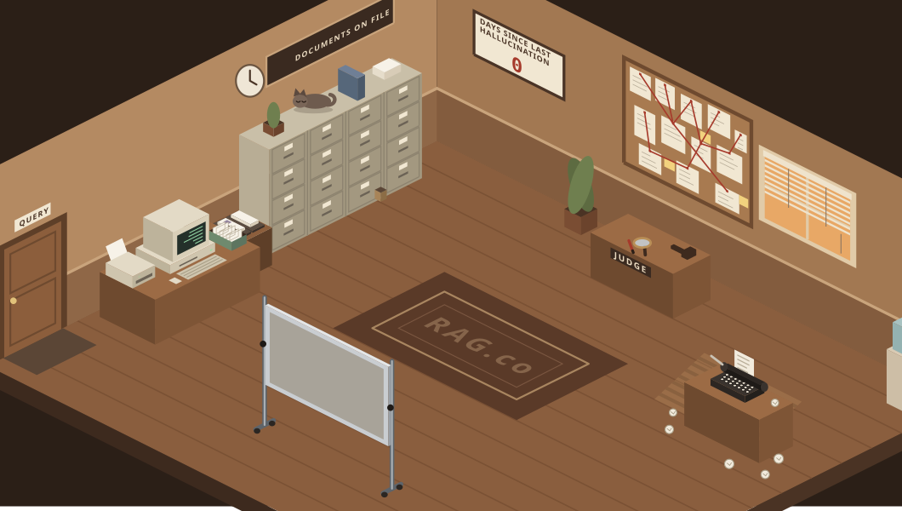

Storyteller: Writing it up with 2 sources…
Clerk
Translator
Scout
Judge
Storyteller
Animation: playing · Skip · Motion offServer finished in 4.2 s
▸ Watch the office
Answer
What was Kenneth's first job after university?
After graduating, Kenneth joined a logistics start-up in Bangkok as a junior data analyst, building the dashboards the operations team used every morning1. A year later he moved into the engineering team to work on the routing service2.